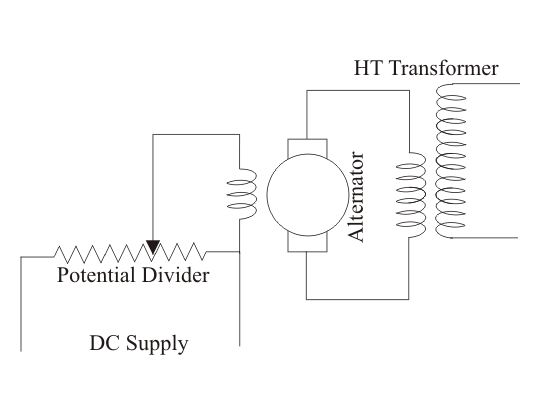
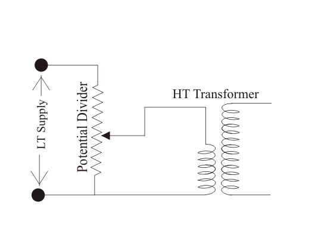
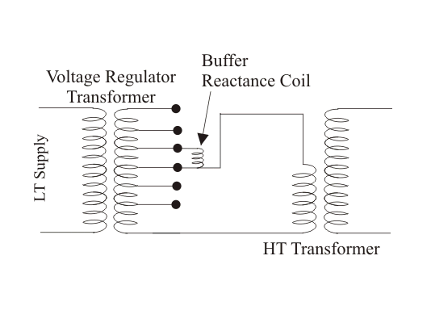

Such transformers are normally used in high voltage laboratory for extra high voltage testing purpose. This transformer is subjected to transient voltages and surges during their normal operation when the insulation under test breaks down. To withstand these impulse voltages, the insulation of transformer is carefully designed. This high voltage transformer is single phase, core type. This type of transformer is generally oil immersed. Bakelite sheets are used for separating high tension and low tension winding. The high voltage transformers used for HT cable testing purpose are to supply also sufficient electric current and that is why the cooling system of these transformers is very carefully designed. Special cares also to be taken for voltage regulation of transformers. For insulator testing purposes, the required electric current is very tiny but, while the insulator breaks down during testing, there would flow huge electric current through the transformer. To limit this current, a high resistance is connected in series with transformer. As the electric current required is very less during insulation testing, this high voltage transformer needs not to have high KVA ratings. The table below shows, the rating of transformer used for various testing purposes.
Up to voltage 500 KV, generally single one high voltage transformer is used. But for higher voltage more than one transformer, are connected in cascade to produce required high voltage. Actually for getting such high voltage, a single transformer has to be very huge in size which is not at all economical.
The figure below shows the typical cascading connection of two transformers.
Low voltage is supplied to the low voltage winding of a step up transformer 1 as shown in the figure below. The tank of this transformer is earthed. The secondary of this transformer, is connected to the earthed tank and other end comes out through a high voltage bushing. The bushing is so specially designed and manufactured, that it can withstand full secondary high voltage, in respect of earthed potential of transformer tank. Another tapping terminal also runs through this high voltage bushing. The high voltage end and tapping terminal ends are connected across primary of the second transformer. One end of the secondary winding of second transformer is connected to its tank. The tank of second transformer is not earthed like first transformer. This is isolated and insulated from earth for full secondary voltage of the transformer. One end of the high voltage or secondary winding of second transformer is connected to the earth and other end alone comes out from the high voltage bushing for feeding high voltage to the equipments and insulators under testing.
| SL |
Purposes |
Capacity |
Maximum Voltage |
| 1. |
Routine test for electric motors & switch gears |
small |
2 to 3 KV |
| 2. |
Insulation testing |
10 to 20 KVA |
50 KV |
| 3. |
Routine test of cable |
50 KVA |
10 to 30 KV |
| 4. |
Extra high voltage transformer & insulators testing |
20 to 50 KVA |
100 – 200 KV |
| 5. |
String insulator testing |
0.5 to 1 KVA per KV |
500 to 2000 KV |
| 6. |
High voltage cable testing |
100 to 500 KVA |
100 to 500 KV |
Voltage Regulation
The surges on the high voltage side of the transformer should be avoided. Also for accuracy of voltage measurement, the voltage regulation of transformer should be smooth enough. Sudden variation of voltage during test also to be avoided. A voltage regulator should not distort the voltage wave form during testing.
The output voltage of high voltage transformer is regulated by changing input voltage to the primary side.
This variation of input voltage to the primary can be done either by
1) Variation of alternator field current.
2) Inserting resistance or inductance in the supply circuit from alternator.
3) Using induction regulator.
4) Using tapped transformer.
Variation of Alternator Field Current
If one single alternator is used to supply power to the high voltage transformer, the method of variation of alternator field electric current can be performed. An alternator gives sinusoidal wave form of voltage at no load. But it is also desirable, that, this voltage waveform should not be distorted under load condition. This is achieved by making larger air gap between stator and rotor and by special design of armature winding of alternator.

Alternator Field Control
For regulating voltage, no impedance is required to be connected in series with the primary of the transformer, in this case. So voltage wave form distortion due to inserted impedance can be avoided by voltage regulation with variation of alternator field current. The field electric current of the alternator is varied by a voltage, divider, connected across DC supply to the field. In this method zero voltage can be achieved by neutralizing residual magnetism of field by severing required field current.
Voltage Regulation by Inserting Resistance or Inductance
When there is no provision of using separate alternator for high voltage testing in the lab, this method is applied. The high voltage transformer is fed from AC supply mains in case of testing of small equipments. The variation of supply voltage to the H. V. transformer is obtained by inserting resistance in series with the AC supply. A sliding resistance is most suitable for achieving smooth regulation of voltage supplied to the transformer primary. Sometimes the resistance can also be connected across main supply and used as voltage divider, to supply variable voltage to the transformer.

Potential Divider Control
This method is quite simple but it suffers from power loss problem. The power loss across the resistance is not practically accepted for high power tests. The resistance required for high power application is quite large in size and cost. Because of these disadvantages this method is limited upto the application for the equipment rated from 2 KVA to 3 KVA.
Instead of resistance, voltage regulation can be achieved by connecting a choke coil (inductor) in series with the primary of the transformer. Voltage variation can be obtained by changing the position of iron core in the choke coil. That means, by inserting and withdrawing iron core inside the coil, the voltage variation is achieved. Due to lower power loss, this method is more efficient than resistance method. But still it has some inherent disadvantages.
1) For higher power, very large size of this choke coil is required.
2) There is always a good chance of voltage distortion due to iron core in the coil.
3) Another disadvantage of this method, is in fact that increase of its inductance will increase the primary voltage of the transformer instead of decreasing it if the power factor of the load on the secondary ride of the testing transformer is leading as is often the case.
Induction Regulator Method
Inductance regulator control is suitable for all ranges of power. It can be efficiently used for all load and power factors. Smooth voltage regulation from zero to full range can be achieved by this method.In induction regulator is essentially a variable transformer. The secondary voltage of this variable transformer can be varied by changing primary turns. Variation of primary turns is achieved by rotating a knob attached to the transformer.
Actually in this type of variable transformer, the number of turns in primary and secondary windings are same. But when we rotate the said knob attached to the transformer the number of active turns across primary varies, hence turns ratio changes which ultimately results to variable secondary voltage.
During designing this type of transformer it must be kept in mind that, the winding of transformer on rotor portion are so designed and distributed that, it does not distort the actual wave form of the test voltage.
Induction regulator method is most suitable for the high voltage transformer, used for power cable testing purpose. Because its gradual voltage variation at loads of any magnitude is advantageous for such work.
In this method of voltage transformer, a tapped transformer is essentially used. The theory of voltage variation by tapped transformer is quite simple.
In this arrangement the primary of transformer is connected with LT supply main. The secondary winding of the transformer is tapped at various points. The voltage at primary of HT transformer is supplied from these tapped points.
When the contact of tapping switch moves from one tap to another, these would be a chance of opening the secondary circuit of tapping transformer. Due to this opening there may be a high chance of surge in the high voltage transformer.
To avoid this situation two contact brushes are used for tap changer switch. It makes contact with adjacent studs and with a buffer resistance or reactance coil between them to prevent short circuit of a section of the transformer winding.
Here in the diagram we have shown a two winding transformer as tapped transformer but it can be auto transformer too.
For gradual regulation a number of course tapping are used together with fine tappings. This method of voltage regulation by tapped transformer is advantageous for its high efficiency and small wave form distortion as there is no voltage drops in the circuit, only the voltage wave is stepped up.
As the winding is tapped the voltage regulation is not very smooth. But it can be made smoother by using very large number of taps in the secondary winding of tapped transformer but it increases cost of the transformer.
Hence this method of voltage regulation is used on high voltage transformer only when it is required for large and expensive switchgear testing.

Tapped Transformer Regulator
 by
by